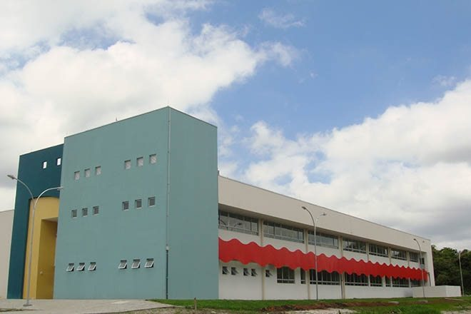

Instituto Federal do Paraná
Campus Paranaguá

O Instituto
Localização
Quem Somos
Cursos
Venha estudar no nosso campus
Nossos Cursos
ENSINO MÉDIO INTEGRADO
Técnico em Informática
Técnico em Mecânica
Técnico em Meio Ambiente
ENSINO SUPERIOR
Licenciatura em Ciências Sociais
Licenciatura em Física
Tecnologia em Análise e Desenvolvimento de Sistemas
Tecnologia em Gestão Ambiental
Tecnologia em Manutenção Industrial
ESPECIALIZAÇÃO
Especialização em Gestão Ambiental
Especialização em Matemática Computacional
MESTRADO
Mestrado Acadêmico em Ciência, Tecnologia e Sociedade
PROEJA E CURSOS FIC
Auxiliar de Agroecologia – Paranaguá
Defensores Populares – Curitiba
Agente de Regularização Fundiaria
Operadores de Direito Étnicos e Coletivos – Indígenas